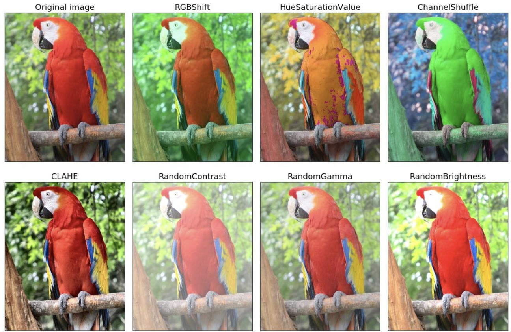
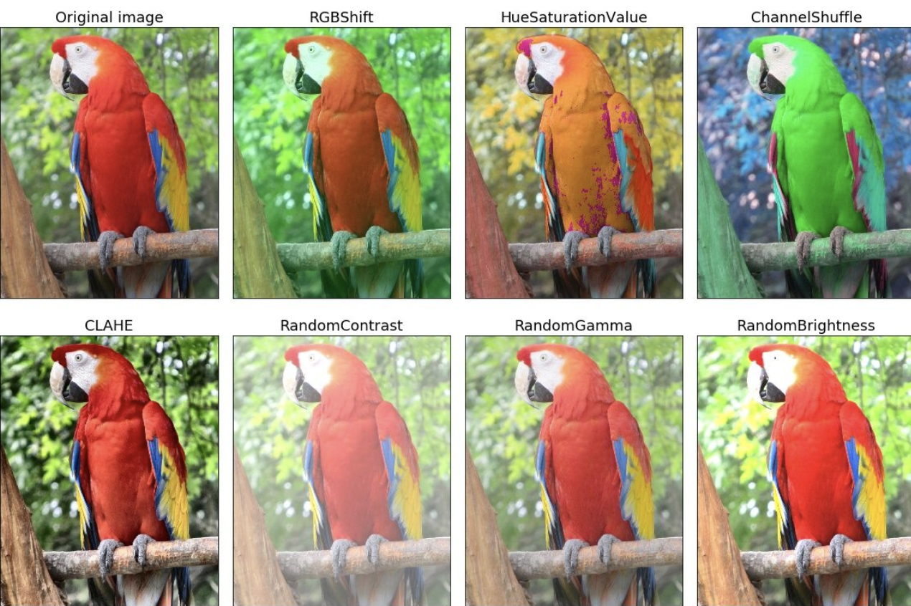
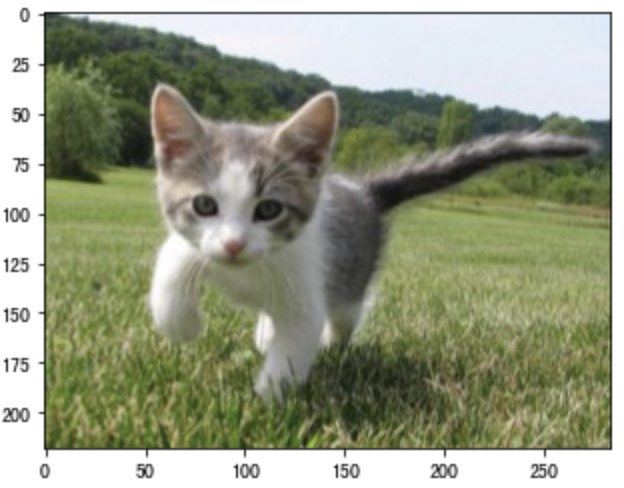
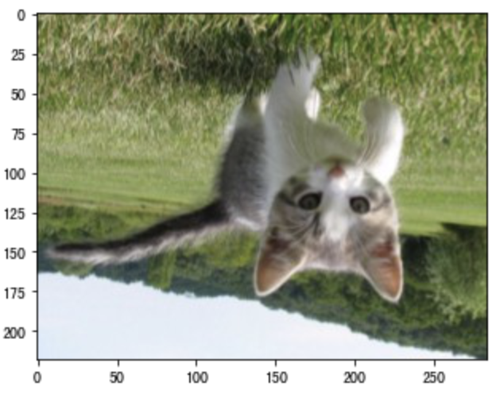
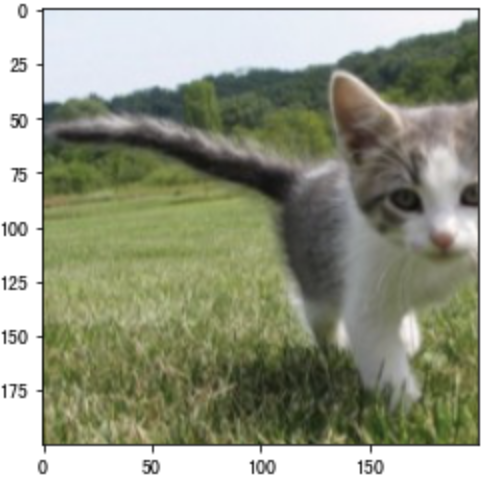
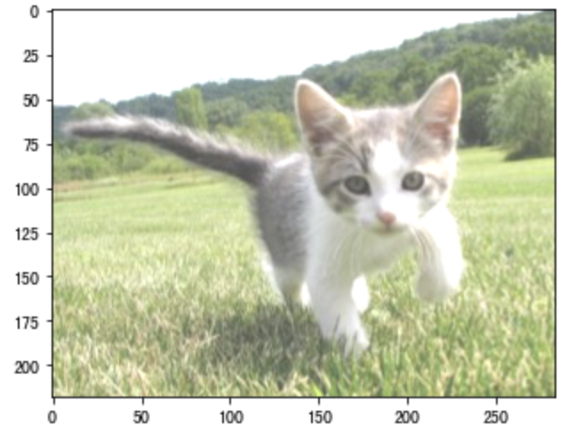
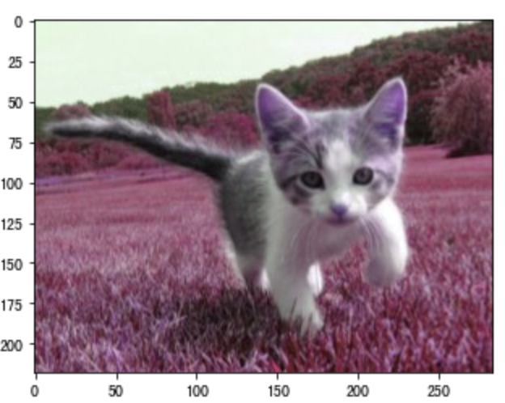
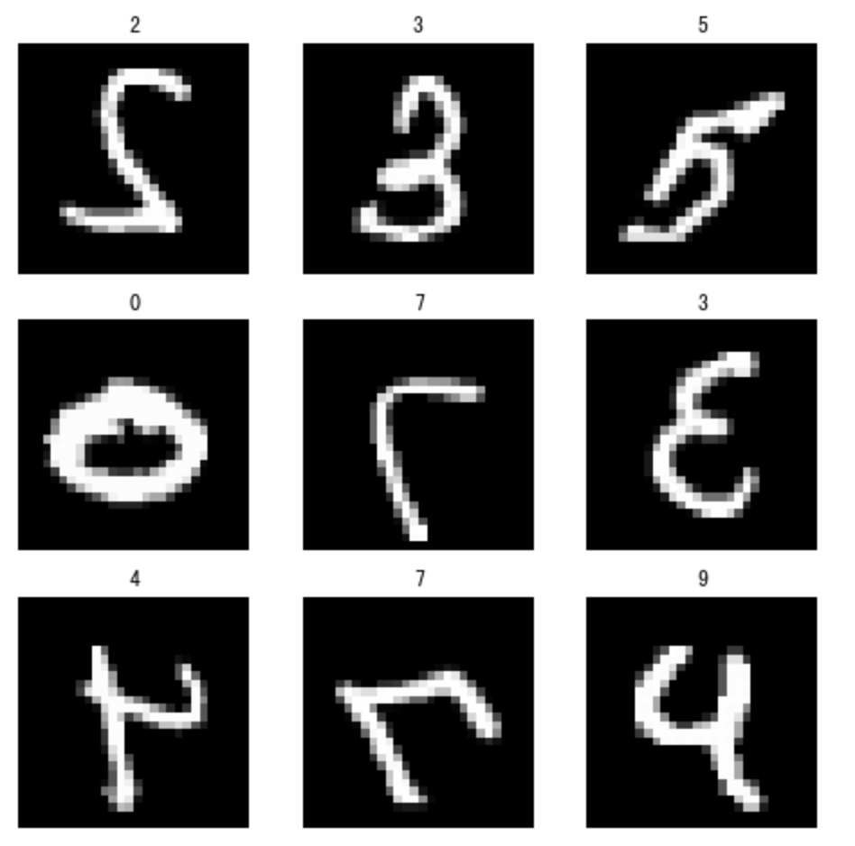

2.6 图像增强¶
学习目标
- 知道图像增强的常用方法
- 能够利用tf.keras来完成图像增强

大规模数据集是成功应用深度神经网络的前提。例如，我们可以对图像进行不同方式的裁剪，使感兴趣的物体出现在不同位置，从而减轻模型对物体出现位置的依赖性。我们也可以调整亮度、色彩等因素来降低模型对色彩的敏感度。可以说，在当年AlexNet的成功中，图像增强技术功不可没
1.常用的图像增强方法¶
图像增强（image augmentation）指通过剪切、旋转/反射/翻转变换、缩放变换、平移变换、尺度变换、对比度变换、噪声扰动、颜色变换等一种或多种组合数据增强变换的方式来增加数据集的大小。图像增强的意义是通过对训练图像做一系列随机改变，来产生相似但又不同的训练样本，从而扩大训练数据集的规模，而且随机改变训练样本可以降低模型对某些属性的依赖，从而提高模型的泛化能力。
常见的图像增强方式可以分为两类：几何变换类和颜色变换类
- 几何变换类，主要是对图像进行几何变换操作，包括**翻转，旋转，裁剪，变形，缩放**等。

- 颜色变换类，指通过模糊、颜色变换、擦除、填充等方式对图像进行处理

实现图像增强可以通过tf.image来完成，也可以通过tf.keras.imageGenerator来完成。
2.tf.image进行图像增强¶
导入所需的工具包并读取要处理的图像：
# 导入工具包
import tensorflow as tf
import matplotlib.pyplot as plt
import numpy as np
# 读取图像并显示
cat = plt.imread('./cat.jpg')
plt.imshow(cat)
2.1 翻转和裁剪¶
左右翻转图像是最早也是最广泛使用的一种图像增广方法。可以通过tf.image.random_flip_left_right来实现图像左右翻转。
# 左右翻转并显示
cat1 = tf.image.random_flip_left_right(cat)
plt.imshow(cat1）

创建tf.image.random_flip_up_down实例来实现图像的上下翻转，上下翻转使用的较少。
# 上下翻转
cat2 = tf.image.random_flip_up_down(cat)
plt.imshow(cat2)

随机裁剪出一块面积为原面积10\% \sim 100\%的区域，且该区域的宽和高之比随机取自0.5 \sim 2，然后再将该区域的宽和高分别缩放到200像素。
# 随机裁剪
cat3 = tf.image.random_crop(cat,(200,200,3))
plt.imshow(cat3)

2.2 颜色变换¶
另一类增广方法是颜色变换。我们可以从4个方面改变图像的颜色：亮度、对比度、饱和度和色调。接下来将图像的亮度随机变化为原图亮度的50\%（即1-0.5）\sim 150\%（即1+0.5）。
cat4=tf.image.random_brightness(cat,0.5)
plt.imshow(cat4)

类似地，我们也可以随机变化图像的色调
cat5 = tf.image.random_hue(cat,0.5)
plt.imshow(cat5)

3 使用ImageDataGenerator()进行图像增强¶
ImageDataGenerator()是keras.preprocessing.image模块中的图片生成器，可以在batch中对数据进行增强，扩充数据集大小，增强模型的泛化能力。比如旋转，变形等，如下所示：
keras.preprocessing.image.ImageDataGenerator(
rotation_range=0, #整数。随机旋转的度数范围。
width_shift_range=0.0, #浮点数、宽度平移
height_shift_range=0.0, #浮点数、高度平移
brightness_range=None, # 亮度调整
shear_range=0.0, # 裁剪
zoom_range=0.0, #浮点数 或 [lower, upper]。随机缩放范围
horizontal_flip=False, # 左右翻转
vertical_flip=False, # 垂直翻转
rescale=None # 尺度调整
)
来看下水平翻转的结果：
# 获取数据集
(x_train, y_train), (x_test, y_test) = tf.keras.datasets.mnist.load_data()
# 将数据转换为4维的形式
x_train = X_train.reshape(X_train.shape[0],28,28,1)
x_test = X_test.reshape(X_test.shape[0],28,28,1)
# 设置图像增强方式：水平翻转
datagen = ImageDataGenerator(horizontal_flip=True)
# 查看增强后的结果
for X_batch,y_batch in datagen.flow(x_train,y_train,batch_size=9):
plt.figure(figsize=(8,8)) # 设定每个图像显示的大小
# 产生一个3*3网格的图像
for i in range(0,9):
plt.subplot(330+1+i)
plt.title(y_batch[i])
plt.axis('off')
plt.imshow(X_batch[i].reshape(28,28),cmap='gray')
plt.show()
break

总结
- 常用的图像增强方法：几何和颜色
- 在tf,keras中可以通过：tf.image和ImageDataGenerator()完成图像增强